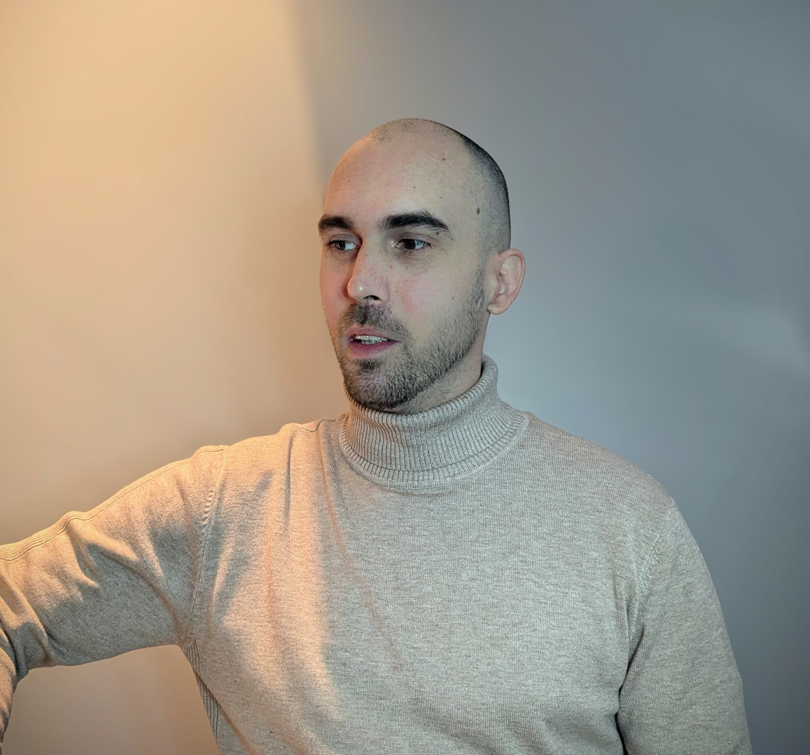

Bienvenue sur mon Portfolio
Ce site a été créé dans le cadre de ma formation en BTS Services Informatiques aux Organisations (SIO) spécialité SISR (Solutions d'Infrastructure, Systèmes et Réseaux). Il a pour but de présenter mon parcours, mes compétences et les projets réalisés durant ma formation, ainsi que de vous permettre de me contacter pour toute question ou opportunité professionnelle.
Le BTS SIO est une formation en deux ans accessible après le baccalauréat. Elle prépare les étudiants aux métiers de l'informatique à travers deux spécialités, SLAM axé sur le développement logiciel et SISR, systèmes et réseaux, spécialité que j'ai choisie.
- SISR : axée sur la gestion des réseaux, la cybersécurité, l’administration systèmes et les infrastructures informatiques.
Que trouverez-vous ici ?
- Une présentation de mes écoles, du BTS SIO et de moi-même.
- Des exemples de projets menés en cours de formation.
- Une page dédiée à la veille technologique.
- Un accès pour me contacter.
- Des informations sur la conformité du site.
J'espère que ce site vous permettra de mieux comprendre ma formation, de découvrir l'étendue de mes compétences acquises jusqu'ici, et vous donnera l'envie d’entrer en contact avec moi pour un stage, une alternance ou une opportunité d’emploi.
Qui suis-je ?
Je m'appelle Albouy Kévin, j'ai 35 ans et je suis passionné par l'informatique.
Après avoir travaillé dans un autre domaine, j'ai décidé de poursuivre ma passion pour les technologies du numérique.
En reconversion professionnelle, j'ai obtenu mon baccalauréat à 34 ans afin de concrétiser mon projet dans l'informatique. Actuellement en deuxième année de BTS SIO, je suis motivé à réussir ce diplôme et à poursuivre mes études pour approfondir mes compétences et élargir mes perspectives professionnelles.

Tableau de synthèse — Épreuve E5 BTS SIO

Bonne visite.